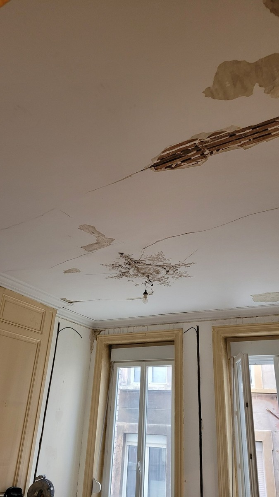
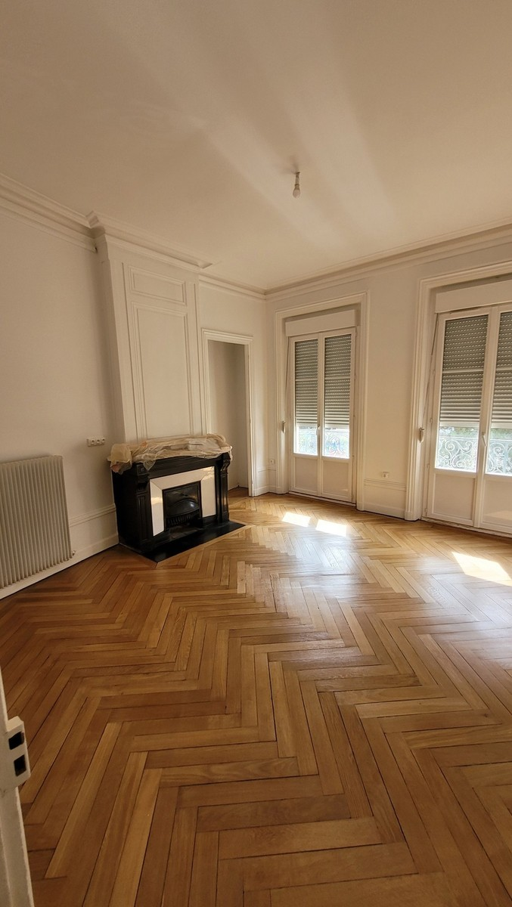

Peinture appartement
Remise en peinture complète ou partielle des murs, plafonds et pièces concernées.
Peinture, reprises de placo, plafonds, ratissage et préparation pour remettre un logement en état avant emménagement, mise en location ou relocation.
Selon l’état des pièces, l’intervention peut combiner plâtrerie légère, réparation de placo, ratissage, préparation des murs et plafonds puis mise en peinture.
Remise en peinture complète ou partielle des murs, plafonds et pièces concernées.
Réparation de placo, fissures, trous, défauts d’enduit et zones abîmées avant finition.
Ratissage lorsque nécessaire pour améliorer l’état de surface et obtenir une finition plus homogène.
La remise en état peut être organisée avant une entrée dans les lieux, après un départ de locataire ou dans le cadre d’une rénovation plus globale.
Précisez la commune, le nombre de pièces, l’état général du logement et les travaux souhaités.
Demander un devisUn appartement ancien avec murs, plafonds et finitions très abîmés a fait l’objet d’une remise en état complète : grattage, réparations, reprises en placo, enduits, ratissage, ponçage, impression et peinture des murs, plafonds, portes, boiseries et moulures.


Oui. Le devis peut concerner une pièce, plusieurs pièces ou l’ensemble du logement selon l’état et le besoin.
Les travaux dépendent de l’état des murs, plafonds et éléments en placo. Un échange avec photos permet de distinguer un simple rafraîchissement d’une remise en état plus complète.
Oui, lorsque des zones sont abîmées, les reprises de placo, bandes, enduits et préparation peuvent précéder la peinture.
La commune, le nombre de pièces, les surfaces approximatives, l’état des supports et quelques photos permettent de préparer un premier chiffrage plus efficacement.
{kind=link}
{kind=link}